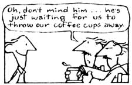

In these days, when squeezing every bit of warmth from your home heating fuel is important, you can't afford to overlook the energy loss that may occur when hot water passes from your boiler to your radiators.
For example, in my home, as in so many others, hot water travels through a number of exposed pipes - in an unheated basement - before it actually starts to warm the living room, a process that wastes energy (and money). The answer, of course, is to insulate that water-carrying network . . . but the cost of manufactured pipe insulation is surprisingly high (I've seen it run as much as 30 to 50 cents a foot). Happily, though, I've found a way to make high-efficiency insulation myself, and - since the raw materials consist of discarded plastic foam drinking cups - the price is right!
IT'D BETTER BE GOOD
As any heat-transfer expert will tell you, wrapping water conduits with just any old material can actually result in heat loss instead of conservation. That's because placing anything around a pipe increases the surface area that's exposed to cold air. Therefore, whatever wrap you use must have a high insulating value in order to offset that factor. Fortunately, polystyrene foam is one of the very best insulators around, and used coffee containers have two other features that contribute to their efficiency. First, only the edge of each cup's bottom is in contact with the hot pipe, which effectively limits conductive heat loss. Second, since the overlapping cups were originally intended to withstand the temperatures of boiling water, they're not likely to be melted by hot pipes.
HOW TO PROCEED
Gathering enough used cups to insulate an entire heating system at one time can be quite an undertaking, since about two dozen containers are required for each running foot of pipe. So I decided simply to add to my pipe wrappings as the cups became available. (The bulk of those that I've used to date were picked up from the highways and byways, where they form omnipresent-and regrettably durable -debris.) I graded them roughly according to capacity, and employed different sizes on different pipes.
Before you install this recycled litter, however, you'd better soak the cups in water and give them a quick rinse . . . to prevent your cellar from smelling like a coffeepot whenever the heat comes up. Then cut a circular hole in each cup's bottom to fit the pipe on which you're going to hang it, and make another slice from the hole, across the bottom, and up the side to the rim. (The material is easy to cut if your knife is sharp.)
POP 'EM ON
By spreading the cut side open and twisting the container a bit, you can pop the insulation over the pipe without any difficulty. And, if the cup is spread open so far that it cracks, a bit of tape will save it. In fact, at first I placed a short piece of tape across every cut side after installation . . . before I realized that the precaution was unnecessary. As you put the cups in place, though, it's best to stagger the cuts to prevent their alignment.
Quite frankly, when I look at those rejected coffee cups marching down the pipes in my basement and know that I'm recycling a discarded petroleum-based product to cut down on my fuel oil bill, I feel a great deal of satisfaction!
|
 |
|
|